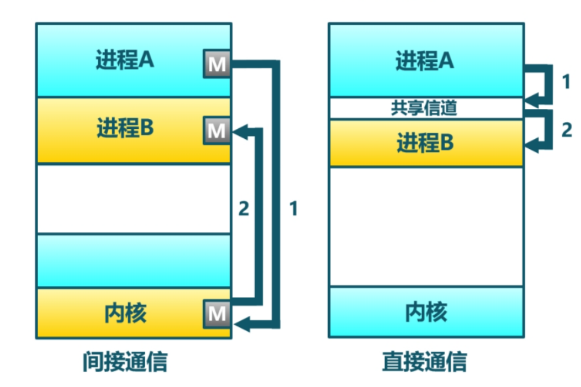
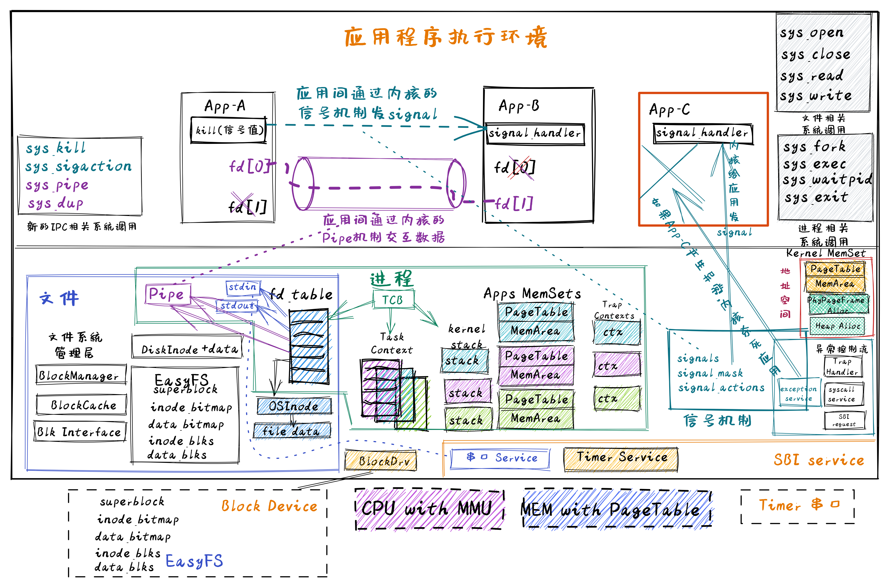
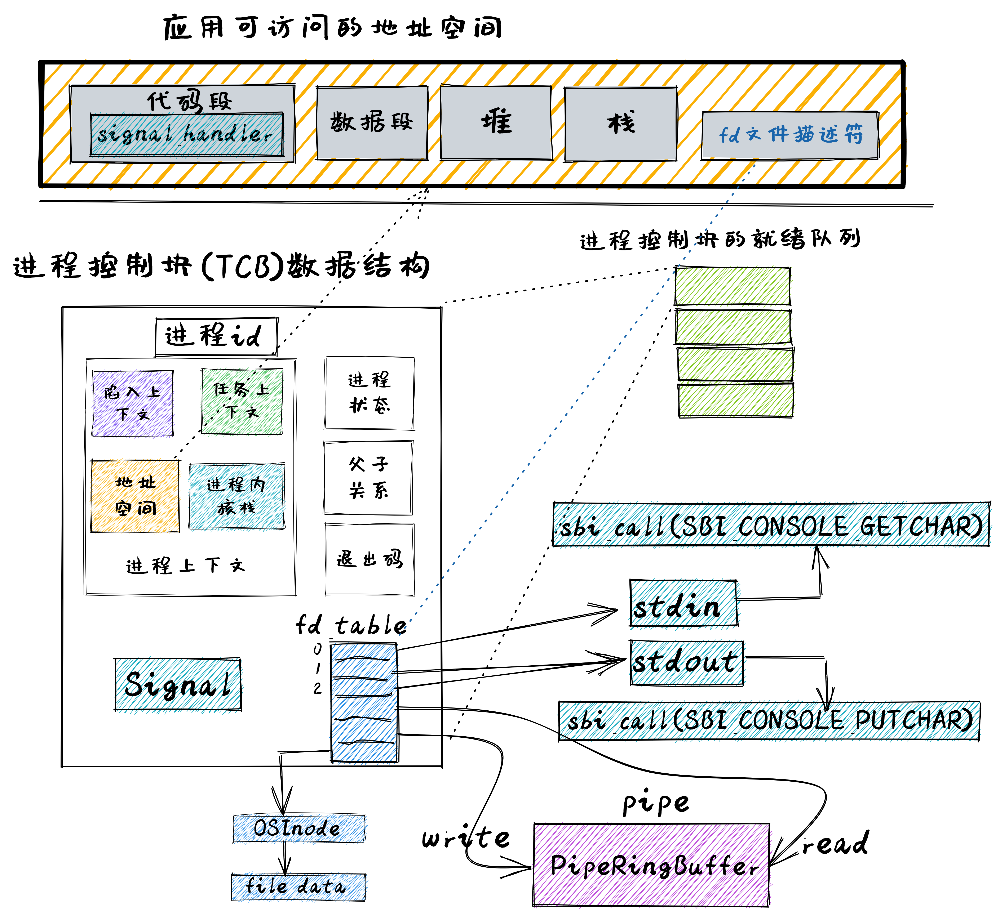

引言#
本章导读#
在前面章节中，我们引入了非常重要的进程的概念，且实现的“伤齿龙”操作系统支持应用的动态创建进程和交互能力。这涉及到与进程管理相关的 fork 、 exec 等创建新进程相关的系统调用。同时，我们进一步引入了文件的抽象，使得进程能够通过一个统一的接口来读写内核管理的持久存储设备，这样数据可以方便地被长久保存。
截止到目前为止，进程在输入和输出方面，还有不少限制，特别是进程能够进行交互的 I/O 资源还非常有限，只能接受用户在键盘上的输入，并将字符输出到屏幕上。我们一般将它们分别称为 标准 输入和 标准 输出。更让应用开发者觉得束手束脚的是：进程被操作系统彻底隔离了。进程间无法方便地“沟通”，导致进程不能一起协作干“大事”。如果能让不同进程实现数据共享与交互，就能把不同程序的功能组合在一起，实现更加强大和灵活的功能。为了让简单的应用程序能够组合在一起形成各种强大和复杂的功能，本章要完成的操作系统的核心目标是： 让不同应用通过进程间通信的方式组合在一起运行 。
其实在 UNIX 的早期发展历史中，也碰到了同样的问题，每个程序专注在完成一件事情上，但缺少把多个程序联合在一起完成复杂功能的机制。直到1975年UNIX v6中引入了让人眼前一亮的创新机制– I/O重定向 与 管道（pipe） 。基于这两种机制，操作系统在不用改变应用程序的情况下，可以将一个程序的输出重新定向到另外一个程序的输入中，这样程序之间就可以进行任意的连接，并组合出各种灵活的复杂功能。
{kind=link}
注解
管道（pipe）可能是 UNIX 中最引人注目的发明
管道的概念来自贝尔实验室的Douglas McIlroy，他在1964年写的一份内部文件中，提出了把多个程序“像花园水管一样”串连并拧在一起的想法，这样数据就可以在不同程序中流动。大约在1972年下半年，Ken Thompson在听了Douglas McIlroy关于管道的唠叨后，灵机一动，迅速把管道机制实现在UNIX中。管道是一种由操作系统提供的机制，它将一个程序的输出连接到另一个程序的输入。可以通过在shell程序中使用 “|” 符号来轻松访问和操作管道。管道是 UNIX 最重要的贡献之一，通过管道可以把功能单一的小程序灵活地组合起来实现各种复杂的功能，从而让UNIX的简单功能哲学（一次把一件事情做好）和复杂系统能力（通过基于管道的排列组合形成复杂能力）有机地融合在一起。
本章我们将引入新操作系统概念 – 管道 ，并进行实现，以支持进程间的I/O重定向功能，即让一个进程的输出成为另外一个进程的输入，从而让进程间能够有效地合作起来。除了键盘和屏幕这样的 标准 输入和 标准 输出之外，管道其实也可以看成是一种特殊的输入和输出，而前面讲解的 文件系统 中的对持久化存储数据的抽象 文件(file) 也是一种存储设备的输入和输出。所以，我们可以把这三种输入输出都统一在 文件(file) 这个抽象之中。这也体现了在 UNIX 操作系统中“ 一切皆文件 ” (Everything is a file) 的重要设计哲学。
注解
一切皆文件
在UNIX经典论文《The UNIX TimeSharing System》中，里奇和汤普森就提出了“一切皆文件”的朴素思想，这个思想或多或少地受到了Multics操作系统的影响。UNIX将普通文件、设备和虚拟的资源（比如管道等）通过目录统一在了一个递归的树形结构中。形成了一个统一的命名空间。UNIX文件系统是一个挂载在ROOT的树形目录结构，每一个目录节点都可以挂载一棵子树。“一切皆文件”意味着这棵树上可以挂载一切。少其实意味着多，对文件进行read和write操作，事实上可以完成 “任意” 操作。
文件这一抽象概念透明化了文件、I/O设备之间的差异，因为在进程看来无论是标准输出还是常规文件都是一种文件，可以通过同样的接口来读写。这不但可以统一对设备的访问方式，且让应用与外设之间的交互进行了解耦，简化了应用的开发，更进一步支持进程间通信，实现了应用功能的组合扩展。这就是文件的强大之处。
为了让应用能够基于 文件 这个抽象接口对不同I/O设备或I/O资源进行操作，我们就需要对 进程 这个概念进行扩展，让它能够管理 文件 这种抽象资源和接口。为了实现 一切皆文件(Everything is a file) 的UNIX设计思想，之前的进程控制块中有一个 文件描述符表 ，在表中保存着多个 文件 记录信息。每个文件描述符是一个非负的索引值，即对应文件记录信息的条目在文件描述符表中的索引。这个阶段的文件还仅仅是指磁盘上的数据存储。我们要对文件范围进行扩充，从数据存储扩大到外设、管道这样的物理和虚拟资源。
为了统一表示 标准 输入、 标准 输出、管道和数据存储等，我们把支持 File trait 定义的接口的结构都称为文件。这样只要 标准 输入、 标准 输出、管道也基于统一的 File trait 接口实现自己的打开、关闭和读写等文件操作，就可以让进程来对自己进行管理了。从用户的角度来看，应用访问文件将很简单，它不太需要关注文件的具体细节，只需通过文件描述符，就可以对 文件 进行读写，从而完成接收键盘输入，向屏幕输出，两个进程之间进行数据传输的操作，以及对存储设备上的数据进行读写。
仅仅实现文件的统一抽象和支持进程间通信的管道机制，还不够灵活。因为这需要两个进程之间相互“知道”它们要通信，即它们不能独立存在。我们可以进一步扩展进程动态管理的机制，来实现独立应用之间的I/O重定向，从而可以让独立的应用之间能够灵活组合完成复杂功能。具体而言，这需要扩展与应用程序执行相关的 exec 系统调用，加入对程序运行参数的支持，并进一步改进了对shell程序自身的实现，加入对重定向符号 > 、 < 的识别和处理。这样我们也可以像UNIX中的shell程序一样，基于文件机制和管道机制实现灵活的I/O重定位功能，更加灵活地把独立的应用程序组合在一起实现复杂功能。
仅仅有支持数据传递的管道机制还不够便捷，进程间也需要更快捷的通知机制。而且操作系统也不仅仅是被动地接受来自进程的系统调用，它也需要有主动让进程响应它发出的通知的需求。这些都推动了一种 信号（Signal） 的事件通知机制的诞生。
注解
信号(Signal)可能是 UNIX 中最早实现的内核通知进程的机制
信号从 UNIX 的第一版本就已经存在了，由于其设计实现的细节和边界条件较多，容易出错，所以经历了许多次设计开发的迭代。在早期设计中，UNIX通过不同的系统调用来设置对不同类型信号的捕获；在UNIX第二版，出现了让用户给进程发信号的 kill 命令；在UNIX第四版，进一步简化了系统调用设计，可通过一个系统调用来设置对所有信号的捕获；发展到UNIX第七版，信号的设计模型还是不够可靠，会出现信号可能丢失的情况。在后续的BSD UNIX 4.3版和UNIX SVR3中，增加了可靠信号机制，而且BSD UNIX还扩展了 SIGUSR1 和 SIGUSR2 信号，目的是将其用于进程间传递特定事件，但BSD和SVF3二者并不兼容。直到POSIX.1标准的提出，才对可靠信号相关的系统调用和语义进行了标准化。
简而言之，本章我们首先建立基于文件的统一I/O抽象，将标准输入/标准输出的访问改造为基于文件描述符，然后同样基于文件描述符实现一种父子进程之间的通信机制——管道，从而实现灵活的进程间通信，并基于文件抽象和管道支持不同的独立进程之间的动态组合，来实现复杂功能。而且通过实现信号机制，进程和操作系统可以主动发出信号来异步地通知相关事件给其它进程。这样就构成了具有团队协作能力的白垩纪“迅猛龙” 1 操作系统。
实践体验#
获取本章代码：
$ git clone https://github.com/rcore-os/rCore-Tutorial-v3.git
$ cd rCore-Tutorial-v3
$ git checkout ch7
在 qemu 模拟器上运行本章代码：
$ cd os
$ make run
进入shell程序后，可以运行管道机制的简单测例 pipetest 和比较复杂的测例 pipe_large_test 。 pipetest 需要保证父进程通过管道传输给子进程的字符串不会发生变化；而 pipe_large_test 中，父进程将一个长随机字符串传给子进程，随后父子进程同时计算该字符串的某种 Hash 值（逐字节求和），子进程会将计算后的 Hash 值传回父进程，而父进程接受到之后，需要验证两个 Hash 值相同，才算通过测试。
运行两个测例的输出可能如下：
>> pipetest
Read OK, child process exited!
pipetest passed!
Shell: Process 2 exited with code 0
>> pipe_large_test
sum = 369114(parent)
sum = 369114(child)
Child process exited!
pipe_large_test passed!
Shell: Process 2 exited with code 0
>>
此外，在本章我们为shell程序支持了输入/输出重定向功能，可以将一个应用的输出保存到一个指定的文件。例如，下面的命令可以将 yield 应用的输出保存在文件 fileb 当中，并在应用执行完毕之后确认它的输出：
>> yield > fileb
Shell: Process 2 exited with code 0
>> cat fileb
Hello, I am process 2.
Back in process 2, iteration 0.
Back in process 2, iteration 1.
Back in process 2, iteration 2.
Back in process 2, iteration 3.
Back in process 2, iteration 4.
yield pass.
Shell: Process 2 exited with code 0
>>
本章代码树#
迅猛龙操作系统 – IPCOS的总体结构如下图所示：
{kind=link}
通过上图，大致可以看出迅猛龙操作系统 – IPCOS增加了两种通信机制，一种是交换数据的管道（Pipe）机制，另外一种是发送异步通知事件的信号（signal）机制，应用程序通过新增的管道和信号相关的系统调用可以完成进程间通信。这两种机制所对应的资源都被进程管理，如下图所示。
{kind=link}
这里把管道看成是一种特殊的内存文件，并在进程的打开文件表 fd_talbe 中被管理，而且进程通过文件读写系统调用就可以很方便地基于管道实现进程间的数据交换。而信号是进程管理的一种资源，发送信号的进程可以通过系统调用给接收信号的目标进程控制块中的 signal 结构更新所发信号信息，操作系统再通过扩展 trap_handler 中从内核态返回到用户态的处理流程， 改变了接收信号的目标进程的执行上下文，从而让接收信号的目标进程可以优先执行处理信号事件的预设函数 signal_handler ，在处理完信号后，再继续执行之前暂停的工作。
位于 ch7 分支上的迅猛龙操作系统 - IPCOS的源代码如下所示：
./os/src
Rust 28 Files 2061 Lines
Assembly 3 Files 88 Lines
├── bootloader
│ └── rustsbi-qemu.bin
├── LICENSE
├── os
│ ├── build.rs
│ ├── Cargo.lock
│ ├── Cargo.toml
│ ├── Makefile
│ └── src
│ ├── config.rs
│ ├── console.rs
│ ├── entry.asm
│ ├── fs(新增：文件系统子模块 fs)
│ │ ├── mod.rs(包含已经打开且可以被进程读写的文件的抽象 File Trait)
│ │ ├── pipe.rs(实现了 File Trait 的第一个分支——可用来进程间通信的管道)
│ │ └── stdio.rs(实现了 File Trait 的第二个分支——标准输入/输出)
│ ├── lang_items.rs
│ ├── link_app.S
│ ├── linker-qemu.ld
│ ├── loader.rs
│ ├── main.rs
│ ├── mm
│ │ ├── address.rs
│ │ ├── frame_allocator.rs
│ │ ├── heap_allocator.rs
│ │ ├── memory_set.rs
│ │ ├── mod.rs
│ │ └── page_table.rs
│ ├── sbi.rs
│ ├── syscall
│ │ ├── fs.rs(修改：调整 sys_read/write 的实现，新增 sys_dup/pipe)
│ │ ├── mod.rs(修改：调整 syscall 分发)
│ │ └── process.rs
│ ├── task
│ │ ├── context.rs
│ │ ├── manager.rs
│ │ ├── mod.rs
│ │ ├── pid.rs
│ │ ├── processor.rs
│ │ ├── switch.rs
│ │ ├── switch.S
│ │ └── task.rs(修改：在任务控制块中加入文件描述符表相关机制)
│ ├── timer.rs
│ └── trap
│ ├── context.rs
│ ├── mod.rs
│ └── trap.S
├── README.md
├── rust-toolchain
└── user
├── Cargo.lock
├── Cargo.toml
├── Makefile
└── src
├── bin
│ ├── exit.rs
│ ├── fantastic_text.rs
│ ├── forktest2.rs
│ ├── forktest.rs
│ ├── forktest_simple.rs
│ ├── forktree.rs
│ ├── hello_world.rs
│ ├── initproc.rs
│ ├── matrix.rs
│ ├── pipe_large_test.rs(新增)
│ ├── pipetest.rs(新增)
│ ├── run_pipe_test.rs(新增)
│ ├── sleep.rs
│ ├── sleep_simple.rs
│ ├── stack_overflow.rs
│ ├── user_shell.rs
│ ├── usertests.rs
│ └── yield.rs
├── console.rs
├── lang_items.rs
├── lib.rs(新增两个系统调用：sys_dup/sys_pipe)
├── linker.ld
└── syscall.rs(新增两个系统调用：sys_dup/sys_pipe)
本章代码导读#
实现迅猛龙操作系统的过程就是对各种内核数据结构和相关操作的进一步扩展的过程。这里主要涉及到：
支持标准输入/输出文件
支持管道文件
支持对应用程序的命令行参数的解析和传递
实现标准 I/O 重定向功能
支持信号
支持标准输入/输出文件
到本章为止我们将支持三种文件：标准输入输出、管道以及在存储设备上的常规文件和目录文件。不同于前面章节，我们将标准输入输出分别抽象成 Stdin 和 Stdout 两个类型，并为他们实现 File Trait 。在 TaskControlBlock::new 创建初始进程的时候，就默认打开了标准输入输出，并分别绑定到文件描述符 0 和 1 上面。
支持管道文件
管道 Pipe 是另一种文件，它可以用于父子进程间的单向进程间通信。我们也需要为它实现 File Trait 。 os/src/syscall/fs.rs 中的系统调用 sys_pipe 可以用来打开一个管道并返回读端/写端两个文件的文件描述符。管道的具体实现在 os/src/fs/pipe.rs 中，本章第二节 管道 中给出了详细的讲解。管道机制的测试用例可以参考 user/src/bin 目录下的 pipetest.rs 和 pipe_large_test.rs 两个文件。
支持对应用程序的命令行参数的解析和传递
为支持独立进程间的I/O重定向，将在本章第三节 命令行参数与标准 I/O 重定向 中进一步支持对应用程序的命令行参数的解析和传递，这样可以让应用通过命令行参数来灵活地完成不同功能。这需要扩展对应的系统调用 sys_exec ,主要的改动就是在创建新进程时，把命令行参数压入用户栈中，这样应用程序在执行时就可以从用户栈中获取到命令行的参数值了。
实现标准 I/O 重定向功能
上面的工作都是为了支持I/O 重定向，但还差一点。我们还需添加一条文件描述符相关的重要规则：即进程打开一个文件的时候，内核总是会将文件分配到该进程文件描述符表中编号最小的 空闲位置。还需实现符合这个规则的新系统调用 sys_dup ：复制文件描述符。这样就可以巧妙地实现标准 I/O 重定向功能了。
具体思路是，在某应用进程执行之前，父进程（比如 user_shell进程）要对子进程的文件描述符表进行某种替换。以输出为例，父进程在创建子进程前，提前打开一个常规文件 A，然后 fork 子进程，在子进程的最初执行中，通过 sys_close 关闭 Stdout 文件描述符，用 sys_dup 复制常规文件 A 的文件描述符，这样 Stdout 文件描述符实际上指向的就是常规文件A了，这时再通过 sys_close 关闭常规文件 A 的文件描述符。至此，常规文件 A 替换掉了应用文件描述符表位置 1 处的标准输出文件，这就完成了所谓的 重定向 ，即完成了执行新应用前的准备工作。接下来，子进程调用 sys_exec 系统调用，创建并开始执行新应用。在重定向之后，新应用所在进程认为自己输出到 fd=1 的标准输出文件，但实际上是输出到父进程（比如 user_shell进程）指定的文件A中，从而实现了两个进程之间的信息传递。
支持信号
信号（Signals）是操作系统中实现进程间通信的一种异步通知机制，可以看成是一个应用发出某种信号，希望另外一个应用能及时响应。操作系统为支持这一目标，需要解决三个主要问题：如何向进程发送信号、进程如何接收信号、而信号如何被处理。
操作系统首先需要定义信号类型，表明不同含义的事件。接下来需要扩展进程控制块的内容，把与信号作为一种资源管理起来。发送信号的进程要做的事情比较简单，通过系统调用 kill 给接收信号的目标进程发信号，操作系统会在目标进程控制块中的 signal 结构中记录要接收信号。
这里比较复杂的是接收信号的进程要处理的事务。在进程控制块中，包含了接收到的信号集合 signals ，以及要接收的信号对应的信号处理函数的地址 SignalAction.handler。当操作系统从内核态返回到目标进程的用户态继续执行时，具体的处理过程由 trap_handler 负责， trap_handler 分析目标进程控制块，如果该进程有带接收的信号，且提供了该信号对应的信号处理例程，则备份目标进程的用户态执行上下文，再修改目标进程的用户态执行上下文，让目标进程先执行信号处理函数。目标进程执行完毕信号处理函数后，需要执行一个系统调用 sys_sigreturn 回到内核态，这时内核再恢复刚才备份的目标进程的用户态执行上下文，这样目标进程就可以恢复之前的执行流程了。
- 1
迅猛龙是一种中型恐龙，生活于8300 至7000万年前的晚白垩纪，它们是活跃的团队合作型捕食动物，可以组队捕食行动迅速的猎物。